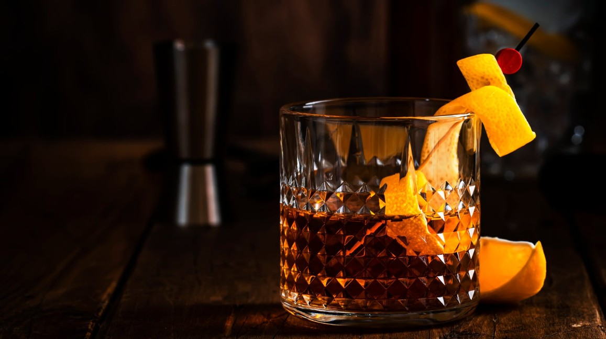
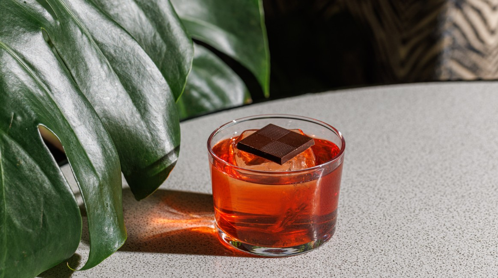

Ingredients
Ice cubes
30ml gin
30ml Campari
30ml sweet vermouth
Orange peel or slice

Instructions
1. Use a rocks glass and fill it with ice.
2. Pour in the gin, Campari and sweet vermouth
3. Stir gently for about 20-30 seconds to chill and slightly dilute
4. Express an orange peel over the drink (squeeze it to release oils), then drop it in.

Tips & variations
Sbagliato: Replace gin with prosecco.
Boulevardier: Swap gin for bourbon or whiskey.
White Negroni: Use blanc vermouth and gentian liquer instead of Campari.
Less bitter: Add a splash of soda water.